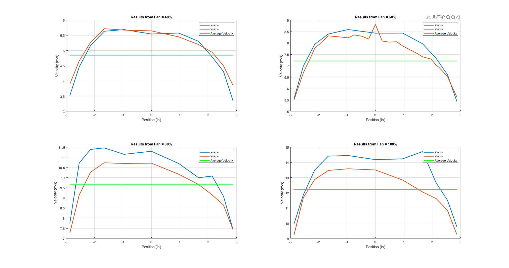

clear; close all; clc;
data.rawData = readtable('AverageVelocitiesWithStdDev');
data.extraData = readtable('AverageVelocities_60.xlsx');
data.velocityData = data.rawData(:,[1,2,4,6,8,10,12,14,16]);
data.stdDevData = data.rawData(:,[1,3,5,7,9,11,13,15,17]);
tubeDiam = 6.065;
n = 5;
rho = 1.1222;
rhoStdDev = 4.8250e-04;
tubeArea = (pi/4)*(tubeDiam^2);
clear tubeDiam;
equalArea = tubeArea/n;
equalArea = equalArea*0.00064516;
tubeArea = tubeArea*0.00064516;
for speed = 1:4
data.velocityDataSource = table2array(data.velocityData(:,2*speed:2*speed+1));
data.stdDevDataSource = table2array(data.stdDevData(:,2*speed:2*speed+1));
for position = 1:n
avgVelocitiesInRegions(position) = mean([data.velocityDataSource(position,1:2) data.velocityDataSource(12-position,1:2)]);
stdDevInRegions(position) = sqrt(sum([data.stdDevDataSource(position,1:2) data.stdDevDataSource(12-position,1:2)].^2));
end
Vavg(speed) = sum(avgVelocitiesInRegions*equalArea)/tubeArea;
VavgStdDev(speed) = sqrt(sum((stdDevInRegions*equalArea).^2)/tubeArea);
clear avgVelocitiesInRegions; clear stdDevInRegions; clear position;
end
clear data.velocityDataSource; clear data.stdDevDataSource; clear speed; clear n;
y60position = vertcat(data.velocityData.Position,data.extraData.Position);
y60data = vertcat(data.velocityData.y60,data.extraData.y60);
y60 = [y60position,y60data];
y60 = sortrows(y60);
figure;
set(gcf, 'Position', get(0, 'Screensize'));
subplot(2,2,1);
hold on;
title('Results from Fan = 40%');
grid on;
plot(data.velocityData.Position,data.velocityData.x40,'LineWidth',2);
plot(data.velocityData.Position,data.velocityData.y40,'LineWidth',2);
plot(data.velocityData.Position,linspace(Vavg(4),Vavg(4),length(data.velocityData.Position)),'LineWidth',2,'Color','g');
legend('X-axis','Y-axis','Average Velocity');
xlabel('Position (in)');ylabel('Velocity (m/s)');
subplot(2,2,2);
hold on;
title('Results from Fan = 60%');
grid on;
plot(data.velocityData.Position,data.velocityData.x60,'LineWidth',2);
plot(y60(:,1),y60(:,2),'LineWidth',2);
plot(y60(:,1),linspace(Vavg(3),Vavg(3),length(y60(:,1))),'LineWidth',2,'Color','g');
legend('X-axis','Y-axis','Average Velocity');
xlabel('Position (in)');ylabel('Velocity (m/s)');
subplot(2,2,3);
hold on;
title('Results from Fan = 80%');
grid on;
plot(data.velocityData.Position,data.velocityData.x80,'LineWidth',2);
plot(data.velocityData.Position,data.velocityData.y80,'LineWidth',2);
plot(data.velocityData.Position,linspace(Vavg(2),Vavg(2),length(data.velocityData.Position)),'LineWidth',2,'Color','g');
legend('X-axis','Y-axis','Average Velocity');
xlabel('Position (in)');ylabel('Velocity (m/s)');
subplot(2,2,4);
hold on;
title('Results from Fan = 100%');
grid on;
plot(data.velocityData.Position,data.velocityData.x100,'LineWidth',2);
plot(data.velocityData.Position,data.velocityData.y100,'LineWidth',2);
plot(data.velocityData.Position,linspace(Vavg(1),Vavg(1),length(data.velocityData.Position)),'LineWidth',2,'Color','g');
legend('X-axis','Y-axis','Average Velocity');
xlabel('Position (in)');ylabel('Velocity (m/s)');
Qtube = Vavg*tubeArea;
QstdDev = VavgStdDev*tubeArea;
mdot = Qtube*rho;
mdotStdDev = mdot*sqrt((QstdDev/Qtube)^2+(rhoStdDev/rho)^2);
Vmax_theoretical = Vavg*2;
data.Vmax_data = table2array(data.rawData(6,2:2:16));
for i = 1:length(Vmax_theoretical)
Vmax_experimental(i) = mean([data.Vmax_data(2*i-1) data.Vmax_data(2*i)]);
developmentPercent(i) = Vmax_experimental(i)/Vmax_theoretical(i);
end
